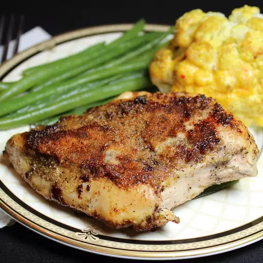

Lemon Chicken

Description
Lemon Chicken is a great healthy option for a high protein dinner including great flavor.
Ingredients
- Butter 2 tablespoons
- Chicken Breast 3 skinless, boneless chicken breat halves
- Salt 1 1/2 tablespoons
- Black Pepper 1 1/2 tablespoons
- Garlic Powder 2 tablespoons, divided
- Lemon 1, juiced
Directions
- Melt butter in a skillet over medium-high heat.
- Season chicken with salt and pepper; place in melted butter. Cook chicken, flipping frequently, until browned, about 5 minutes. Sprinkle 1 tablespoon garlic powder over chicken; cook for 2 minutes. Flip and sprinkle remaining 1 tablespoon garlic powder on the second side; cook for 2 minutes.
- Pour lemon juice over each side of chicken and cook until no longer pink in the center, 5 to 10 minutes more. An instant-read thermometer inserted into the center should read at least 165 degrees F (74 degrees C).